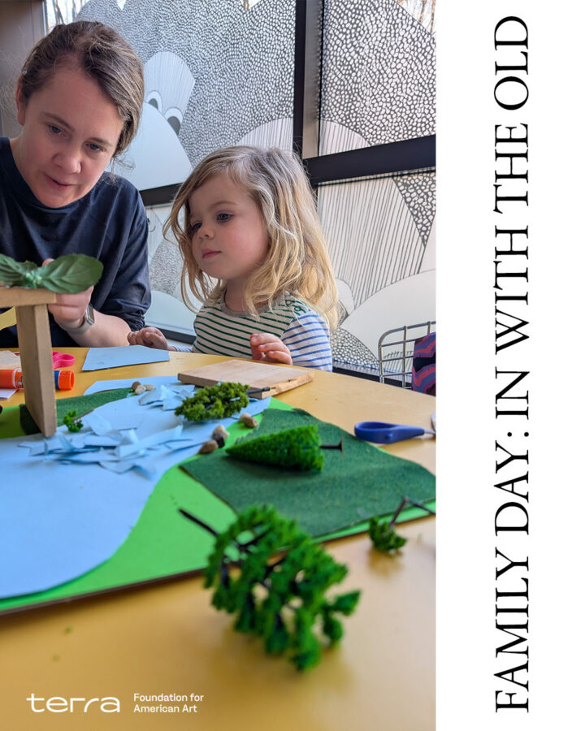

Family Day: In with the Old
Theaster Gates investigates the value of things and their potential to hold layered meanings. Inspired by Gates’s practice & in collaboration with the UChicago student-run nonprofit reSOURCE, families will be invited to reclaim, repurpose, and reimagine seemingly unusable objects from home, transforming them into unique works of art that reflect their acquired significance through the process of caring for and reshaping their value. Families are encouraged to bring an object – such as a clothing item, bag, mug, or toy – one that is underused, undervalued or no longer serves its intended purpose to incorporate into their project.
In addition to our ever-popular artmaking activities, this Family Day will also feature a special story time performance from 11 AM-12 PM, in partnership with the Chicago Public Library and Librarian Megan. Families are welcome to flow in and out of the space throughout the 60-minute performance.
Registration is strongly encouraged to help the Smart team best prepare for the day. Walk-ins will be welcome as space allows. Register here.
About reSOURCE Thrift Store
Located in the basement of Stuart Hall at the University of Chicago, reSOURCE Thrift Store provides an accessible and sustainable option for donating and buying secondhand clothing for the Hyde Park community. reSOURCE is a student-run nonprofit focused on environmental efforts in the Chicagoland area. Our primary goals are to divert clothing waste from landfills, provide accessible and sustainable clothing to the local community, and support local environmental nonprofits by donating our profits.
“In with the Old” is generously supported by the Terra Foundation for American Art.